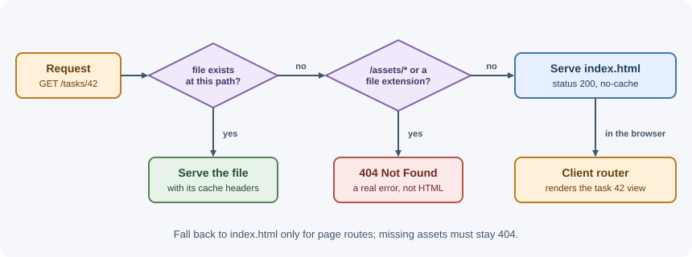

Deploying Frontends and Static Sites¶
A built frontend (TaskFlow Web, a React app built with Vite) or a static documentation site (this site, built with MkDocs) is a folder of files: one or a few HTML entry points plus scripts, styles, fonts, and images. Deploying it means putting those files on a host or CDN so that every visitor gets a consistent version, quickly, and keeps getting it while the next version is uploaded.
This lesson covers static hosting options, what a build produces, content-hashed filenames and the cache headers that go with them, atomic deploys and why upload order matters, CDN invalidation, fallback routing for single-page apps, environment values baked in at build time, preview deploys, and a complete GitHub Pages deploy for an MkDocs site.
Why it matters¶
Static files look simple, but they are cached in more places than anything else you ship: the CDN edge, corporate proxies, and every visitor's browser. Get caching wrong one way and users keep running yesterday's JavaScript against today's API. Get it wrong the other way and every page view downloads megabytes again. Upload files in the wrong order and visitors get a blank page for minutes. Delete old files too early and users who opened the app an hour ago crash when they click a lazy-loaded route.
The good news is that the right setup is well known, cheap, and almost the same on every host: hash the asset filenames, cache them forever, always revalidate the HTML, and switch versions atomically.
Real-world usage¶
- web.dev on HTTP caching. The article
Prevent unnecessary network requests with the HTTP Cache
by Ilya Grigorik and Jeff Posnick recommends
Cache-Control: max-age=31536000for URLs that contain a fingerprint or version (the content at that URL never changes) andno-cachefor unversioned URLs such as HTML, so the browser revalidates every time and gets a small304when nothing changed. - Vite. The Vite guide on building for production
notes that a host may delete assets from previous deployments, so a
user with an older page can fail to load dynamic imports; Vite emits a
vite:preloadErrorevent for that case, and the guide tells you to setCache-Control: no-cacheon the HTML file so it does not keep referencing old assets. - Netlify. The deploy overview says Netlify "enforces a strict concept of atomic deploys": no change goes live until all files of the new deploy are uploaded, and then the whole version goes live at once. Every deploy also gets a permanent URL whose content never changes, and pull requests get Deploy Previews.
- GitHub Pages. The GitHub documentation on
using custom workflows with GitHub Pages
shows the artifact-based deployment used below: a build job uploads
the site with
actions/upload-pages-artifact, and a deploy job withpages: writeandid-token: writepermissions publishes it withactions/deploy-pages.
Popular tools and providers: Vercel, Netlify, Cloudflare Pages and Workers static assets, GitHub Pages, Amazon S3 with CloudFront, Azure Static Web Apps, Firebase Hosting, and nginx or Caddy on your own servers.
How it works¶
What a frontend build produces¶
$ npm run build # vite build
dist/index.html 0.46 kB
dist/assets/index-B7x9q2Lc.css 18.20 kB
dist/assets/index-D4kPz8wa.js 142.71 kB
dist/assets/TaskBoard-Cm3fQ1sE.js 31.05 kB <- lazy-loaded route chunk
index.htmlis the entry point. Its URL never changes (/), and it references the current scripts and styles by their exact filenames.- Everything under
assets/has a content hash in its name, computed from the file's content. Change one line of code and the affected file's name changes; leave a file alone and its name stays the same across builds. - Route-level chunks (
TaskBoard-...js) are loaded later, when the user navigates, which is why old chunks must stay available for a while.
MkDocs Material does the same for its theme bundles; other frameworks (Next.js static export, Angular, SvelteKit) produce the same shape with different folder names.
Cache headers that match the file type¶
| Files | Cache-Control |
Why |
|---|---|---|
Hashed assets (/assets/*-<hash>.js, .css, fonts, images) |
public, max-age=31536000, immutable |
The name changes when the content changes, so a cached copy is never wrong; immutable tells browsers not to revalidate even on reload |
index.html and other HTML entry points |
no-cache |
Always revalidate (cheap 304 with an ETag), so new deploys are seen on the next visit |
Service worker script (sw.js) |
no-cache |
Browsers also check it for updates, but a long cache delays them |
Unhashed files (favicon.ico, robots.txt, manifest.webmanifest) |
short, for example public, max-age=300 |
They can change without a new name |
| Personalized responses (if a server renders them) | private, no-store |
Must never be stored in shared caches |
no-cache does not mean "do not cache"; it means "check with the
server before using". no-store is the one that forbids storing. See
HTTP and CDN caching
for the full set of directives.
Atomic deploys and why order matters¶
A deploy is atomic when visitors see either the complete old version or the complete new version, never a mix. Platforms such as Netlify, Vercel, and Cloudflare Pages do this by uploading every file of a deploy first and then switching one pointer. On plain object storage (S3, GCS, Azure Blob) files are written one at a time, so you create atomicity yourself through ordering:
![Diagram: safe order on the left: upload the new content-hashed assets first with a one-year immutable cache header, then upload index.html last with no-cache, then invalidate only /index.html at the CDN, so every page load works and old tabs still find their old assets kept for days; wrong order on the right: uploading index.html first points to index-B7x9.js before it exists, so the script returns 404 and users see a blank page, and syncing with --delete removes old assets so open tabs fail to lazy-load chunks, leaving the site broken until uploads finish and caches expire.](../frontend-upload-order.svg)
- Upload new assets first. They have new names, so they overwrite nothing and are invisible until something references them.
- Upload the entry point last. The moment the new
index.htmlis live, every file it references already exists. - Delete old assets later, not now. A visitor who loaded the app
before the deploy still runs the old
index.htmland will request old route chunks for as long as the tab stays open. Keep previous releases' assets for days, then clean up.
Requests through a CDN¶
![Diagram: a sequence between browser, CDN edge, and origin bucket; on the first visit after a deploy the browser requests index.html, the edge revalidates with the origin, receives the new HTML referencing index-B7x9.js, and returns it with no-cache; the browser then requests the new asset, the edge misses once and fetches it from the origin, which returns it with max-age 31536000 and immutable, and the edge and browser both cache it; on the next visit the browser revalidates index.html and gets 304 Not Modified, and index-B7x9.js comes from the browser cache with no request at all.](../cdn-hashed-assets.svg)
With this setup, each new version's assets are fetched from the origin about once per edge location, and after that from caches. The HTML costs one small revalidation per page load.
CDN invalidation¶
An invalidation (purge) tells the CDN to drop its copy of a path so the
next request goes to the origin. With hashed assets you only ever need to
invalidate the entry points (/index.html, and / if the CDN caches it
separately). Things to know:
- Invalidation clears CDN edges, not browsers. Anything already cached
in a browser with a long
max-agestays there, which is why HTML must never get a longmax-age. - Invalidations take time to propagate (seconds to minutes) and many CDNs
charge for them beyond a free allowance (CloudFront includes a monthly
quota of free invalidation paths). Invalidating
/*on every deploy throws away the whole cache. - Some CDNs support cache tags or surrogate keys to purge groups of objects at once.
Fallback routing for single-page apps¶
A single-page app handles routes such as /tasks/42 in the browser.
There is no file at that path, so the host must answer with index.html
(status 200) and let the client router render the view. But a missing
script must still be a real 404, otherwise the browser receives HTML when
it expected JavaScript and fails with a confusing MIME-type error.

| Host | How to configure the fallback |
|---|---|
| Netlify | _redirects: /assets/* /404.html 404, then /* /index.html 200 (existing files always win) |
| Vercel | vercel.json rewrites to /index.html, with a source pattern that excludes /assets/ |
| Cloudflare Pages | Serves index.html for unknown paths automatically when the project has no top-level 404.html |
| nginx | try_files $uri $uri/ /index.html; |
| S3 + CloudFront | A CloudFront Function that rewrites extensionless paths to /index.html (custom error responses mapping 403/404 to index.html also work but hide missing assets) |
| GitHub Pages | No rewrites: use hash-based routing or a 404.html that redirects |
Environment values are baked in at build time¶
import.meta.env.VITE_API_URL in TaskFlow Web is replaced with the literal
string during vite build. The built files therefore contain the API URL
of whatever environment they were built for, and changing it requires a
rebuild. Two consequences:
- Either build once per environment (and accept that staging and
production artifacts differ), or load runtime configuration (a
config.jsonfetched at startup) so one build can be promoted. - Anything in a
VITE_*orNEXT_PUBLIC_*variable is public. Never put secrets there.
Both patterns are covered in build-time vs runtime configuration.
Preview deploys¶
Static hosts make per-pull-request previews almost free: every pull request builds and gets its own URL (Netlify Deploy Previews, Vercel Preview Deployments, Cloudflare Pages preview URLs). Point previews at a staging API, keep them out of search engines, and protect them if they show unreleased features. See environments and promotion for the full preview lifecycle.
Security headers belong in the hosting configuration¶
A static host is also where security headers are set:
Content-Security-Policy, Strict-Transport-Security,
X-Content-Type-Options: nosniff, Referrer-Policy, and frame
restrictions. Configure them in the same file as cache headers
(_headers, vercel.json, nginx) so they ship with every deploy.
When to use and when not to use¶
| Option | Atomic deploys | Custom headers and rewrites | Previews | Fits |
|---|---|---|---|---|
| Vercel, Netlify, Cloudflare Pages | Yes | Yes | Built in | Most SPAs and static sites; teams that want zero hosting work |
| S3 (or GCS, Azure Blob) + CDN | No, use ordering | Yes, through object metadata and CDN rules | Build it yourself | Teams already on that cloud, strict control, large scale |
| GitHub Pages | Yes, each publish replaces the site | No custom headers; no rewrites | No | Documentation and project sites, open-source projects |
| nginx or Caddy on your servers | With release directories and a symlink switch | Full control | Build it yourself | Apps already running on your own servers, internal networks |
Static hosting does not fit pages that must be rendered per request (personalized server-side rendering); those need a server or edge functions, though their static assets still follow the rules on this page.
Practical examples¶
Deploy TaskFlow Web to S3 and CloudFront in a safe order¶
#!/usr/bin/env bash
# scripts/deploy-web.sh: ordered, cache-aware deploy of a Vite build
set -euo pipefail
BUCKET="s3://taskflow-web-production"
DISTRIBUTION_ID="${CLOUDFRONT_DISTRIBUTION_ID:?set by CI}"
npm ci
npm run build # dist/index.html + dist/assets/*
# 1. Hashed assets: cache for a year; do NOT delete old files here
aws s3 sync dist/assets "$BUCKET/assets" \
--cache-control "public, max-age=31536000, immutable"
# 2. Other unhashed files (favicon, robots.txt): short cache
aws s3 sync dist "$BUCKET" \
--exclude "assets/*" --exclude "index.html" \
--cache-control "public, max-age=300"
# 3. The entry point last: always revalidated
aws s3 cp dist/index.html "$BUCKET/index.html" \
--cache-control "no-cache" \
--content-type "text/html; charset=utf-8"
# 4. Only the entry point needs to leave the CDN cache
aws cloudfront create-invalidation \
--distribution-id "$DISTRIBUTION_ID" \
--paths "/index.html" "/"
Clean up old assets in a separate scheduled job that keeps every file
referenced by the last few releases. Enable build.manifest: true in
vite.config.js so each build writes a manifest of its files
(dist/.vite/manifest.json), store the manifests per release, and delete
only assets that no recent manifest mentions. Do not use an age-based
bucket rule on assets/: aws s3 sync skips unchanged files, so an
unchanged asset still in use keeps its old upload date and would be
deleted.
Rewrite page routes in CloudFront¶
// cloudfront/spa-rewrite.js: CloudFront Function, viewer-request event
function handler(event) {
var request = event.request;
var uri = request.uri;
var lastSegment = uri.substring(uri.lastIndexOf("/") + 1);
// Page routes have no file extension; assets keep their real 404s
if (!uri.startsWith("/assets/") && lastSegment.indexOf(".") === -1) {
request.uri = "/index.html";
}
return request;
}
nginx serving a single-page app¶
# /etc/nginx/conf.d/taskflow-web.conf
server {
listen 443 ssl;
http2 on;
server_name app.taskflow.example.com;
root /srv/taskflow-web/current; # a symlink switched atomically per release
location /assets/ {
add_header Cache-Control "public, max-age=31536000, immutable";
try_files $uri =404; # missing assets are real 404s
}
location = /index.html {
add_header Cache-Control "no-cache";
}
location / {
add_header Cache-Control "no-cache";
try_files $uri $uri/ /index.html; # page routes fall back to the app
}
}
Deploy by uploading the new build into /srv/taskflow-web/releases/<id>,
copying the previous releases' assets/ files into it (so old tabs keep
working), and switching the current symlink with ln -sfn and mv -T,
the same atomic switch used for backend releases.
Netlify headers and redirects¶
# public/_headers (copied into dist/ by the build)
/assets/*
Cache-Control: public, max-age=31536000, immutable
/index.html
Cache-Control: no-cache
/*
X-Content-Type-Options: nosniff
Referrer-Policy: strict-origin-when-cross-origin
# public/_redirects: the first matching rule wins
/assets/* /404.html 404
/* /index.html 200
The 200 makes the catch-all a rewrite rather than a redirect, and files
that exist are still served directly, because a rule does not apply where
a file exists. A missing file under /assets/ would otherwise fall
through to index.html, so the first rule answers it with a real 404
(with a public/404.html as the body).
Vercel configuration¶
{
"rewrites": [{ "source": "/:path((?!assets/).*)", "destination": "/index.html" }],
"headers": [
{
"source": "/assets/(.*)",
"headers": [{ "key": "Cache-Control", "value": "public, max-age=31536000, immutable" }]
}
]
}
Saved as vercel.json at the project root. The negative lookahead keeps
/assets/ out of the rewrite, so a missing asset stays a 404. Check both
a deep link and a missing asset path on a preview deploy before relying
on it.
Recover when an old tab cannot load a new chunk¶
// src/main.jsx: reload once if a lazy chunk from an old build is gone
window.addEventListener("vite:preloadError", (event) => {
event.preventDefault(); // we handle it
const key = "reloaded-for-new-build";
if (!sessionStorage.getItem(key)) {
sessionStorage.setItem(key, "1");
window.location.reload(); // fetches the new index.html and new chunks
}
});
The sessionStorage guard stops a reload loop if the asset is missing
for some other reason. Keeping old assets available is still the main
defense; this handles the rare tab that outlives them. "New version
available" prompts for long-open tabs and the other version skew defenses
are covered in
keeping frontend and backend in sync.
Worked example: publish an MkDocs site to GitHub Pages¶
This site is built with MkDocs and Material for MkDocs. There are two common ways to publish such a site.
Option A, the Pages artifact workflow (GitHub's recommended custom workflow; set the repository's Pages source to GitHub Actions):
# .github/workflows/docs.yml
name: Publish documentation
on:
push:
branches: [main]
workflow_dispatch:
permissions:
contents: read
pages: write # deploy to Pages
id-token: write # verify the deployment comes from this workflow
concurrency:
group: pages
cancel-in-progress: false # let a running publish finish
jobs:
build:
runs-on: ubuntu-latest
steps:
- uses: actions/checkout@v7
- uses: actions/setup-python@v7
with:
python-version: "3.x"
cache: pip
- run: pip install -r requirements.txt
- run: mkdocs build --strict # fail on broken links and warnings
- uses: actions/configure-pages@v6
- uses: actions/upload-pages-artifact@v5
with:
path: site
deploy:
needs: build
runs-on: ubuntu-latest
environment:
name: github-pages
url: ${{ steps.deployment.outputs.page_url }}
steps:
- id: deployment
uses: actions/deploy-pages@v5
mkdocs build --strictturns warnings (such as links to missing pages) into failures, so a broken page never ships.- The build job has no write access to the repository; only the deploy job can publish, and only to Pages.
- Each run publishes a complete, new version of the site; there is no partially updated state.
Option B, mkdocs gh-deploy. The Material for MkDocs
publishing guide
uses a workflow that runs mkdocs gh-deploy --force, which builds the
site and force-pushes it to a gh-pages branch that Pages serves. It
needs contents: write permission. It is simpler to set up and keeps the
built site in Git history; Option A keeps the repository clean and grants
the workflow fewer permissions.
Either way, set site_url in mkdocs.yml to the published address
(including the repository path for project sites), so canonical links and
the sitemap are correct.
Best practices¶
- Hash asset filenames and cache them for a year with
immutable. - Serve HTML entry points with
no-cacheand validators (ETag). - Upload new assets first and the entry point last; delete old assets days later, by reference, not by age.
- Invalidate only unhashed entry points at the CDN.
- Fall back to
index.htmlfor page routes only; keep real 404s for missing assets. - Treat every build-time variable as public; use runtime configuration for values that differ per environment if you want to promote one build.
- Use preview deploys for every pull request.
- Set security headers in the hosting configuration, version-controlled.
- Build with strict settings (
mkdocs build --strict, failing type checks and lint) so broken output never deploys.
In production¶
- Users see a blank page right after a deploy.
Detect: console errors such as "Failed to load module script" or 404s
for
index-<hash>.js. Cause:index.htmlwas uploaded before its assets, or the CDN still serves an old HTML that references deleted files. Fix: upload assets first and HTML last, keep old assets, and serve HTML withno-cache. - Some users still run last week's version.
Detect: error reports from old asset hashes; the HTML response has a
long
max-age. Cause: the entry point was cached by browsers. Fix:no-cacheon HTML; until old caches expire, a version check in the app can prompt a reload. - Navigating to a route crashes with a chunk load error.
Detect:
ChunkLoadErrororvite:preloadErrorevents spike after deploys, from long-open tabs. Cause: old route chunks were deleted. Fix: keep previous releases' assets, and reload once on preload errors. - Refreshing
/tasks/42returns 404. Detect: direct links and reloads fail; navigation inside the app works. Cause: no SPA fallback on the host. Fix: configure a rewrite for page routes. - A missing script returns HTML and the app fails with a MIME error.
Detect: "Refused to execute script ... MIME type text/html".
Cause: a catch-all fallback (or a CDN error rule) serves
index.htmlfor missing assets. Fix: exclude/assets/and paths with extensions from the fallback. - The production build calls the staging API.
Detect: network requests go to the wrong host. Cause: the build
ran with staging
VITE_*values, or one artifact was promoted although values are baked in. Fix: build per environment with explicit values checked in CI, or move to runtime configuration.
Important terminology¶
- Static site: a site served as prebuilt files, with no per-request rendering.
- Entry point: the HTML file that references the current assets.
- Content hash (fingerprint): a hash of a file's content included in its name.
- Immutable caching: caching a URL for a very long time because its content never changes.
- Revalidation: asking the server whether a cached copy is still
current, answered by
304 Not Modifiedif it is. - Atomic deploy: switching all files of a site to a new version at once.
- Invalidation (purge): removing an object from CDN caches.
- SPA fallback: serving
index.htmlfor client-side routes. - Build-time variable: a value inlined into the output during the build.
- Preview deploy: a temporary deployment of a pull request.
Common mistakes and misconceptions¶
- Caching
index.htmlfor a long time. - Not hashing asset filenames, then fighting stale caches with invalidations.
- Invalidating
/*on every deploy instead of only entry points. - Deleting old assets in the same step as the upload (
sync --delete). - Believing a CDN purge clears browser caches.
- A catch-all fallback that turns missing assets into HTML.
- Putting API keys in
VITE_*orNEXT_PUBLIC_*variables. - Expecting one frontend build to work in every environment when values are inlined at build time.
Revision questions¶
- Why can content-hashed assets be cached for a year while
index.htmlcannot? - In what order should files be uploaded to object storage, and why?
- Why should old assets stay available after a deploy, and for how long?
- What does
no-cachemean, and how does it differ fromno-store? - A site's HTML had
max-age=86400and a bad release was replaced after one hour. How long could some users keep the bad HTML, and would a CDN purge help them? - How do you configure a SPA fallback that still returns real 404s for missing assets?
- Why does an age-based deletion rule on
assets/break a site deployed withaws s3 sync? - Compare publishing MkDocs with the Pages artifact workflow and with
mkdocs gh-deploy.
Further learning¶
- web.dev: Prevent unnecessary network requests with the HTTP Cache
- MDN: Cache-Control
- Vite: Deploying a static site
- Amazon CloudFront: Invalidating files
- GitHub Docs: Using custom workflows with GitHub Pages
- Material for MkDocs: Publishing your site
- Next: releasing desktop and mobile apps. Back to the deployment strategies overview.